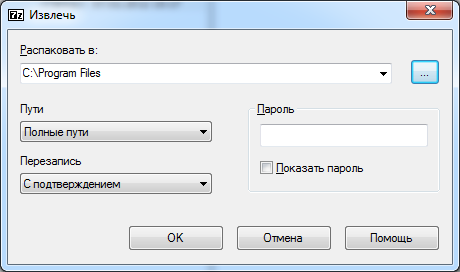
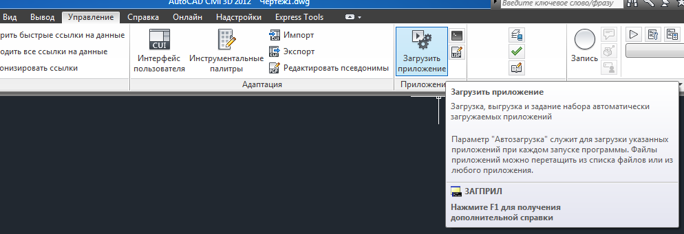
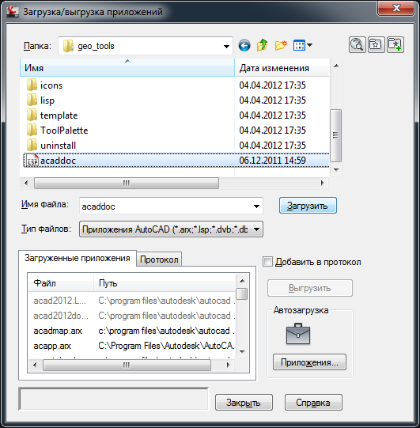
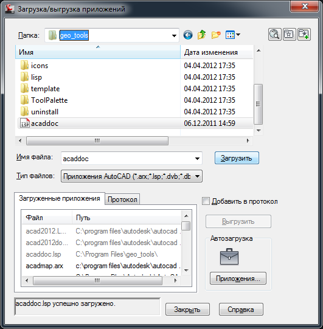
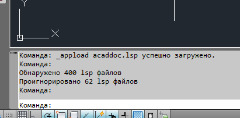
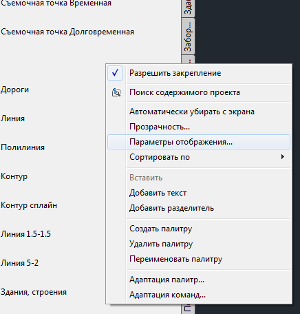
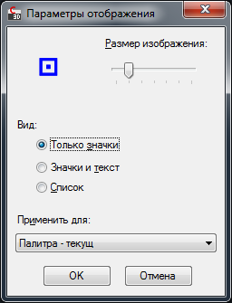
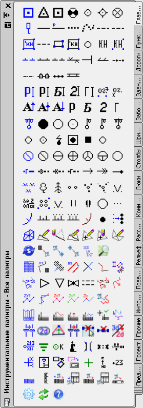

В архиве geo_tools ####.##.## ##-##.zip находится последняя версия geo_tools. Этот архив надо распаковать, например, так
если пользоваться 7zip, но можно чем угодно, главное, чтобы после распаковки получился путь c:\Program Files\geo_tools\, а далее много папок с потрохами geo_tools.
Запускаем AutoCAD Civil 3D 2012 с ярлыка на рабочем столе
На ленте вкладка управление->Загрузить приложение. Как вариант можно написать в командной строке _APPLOAD
Заходим в папку geo_tools (которую недавно распаковали), выбираем файл acaddoc.lsp, давим кнопку Загрузить
Внизу диалогового окна слева появится сообщение "успешно загружено". Закрыть.
В командной строке появится сообщение об успешной загрузке и количестве обнаруженных и проигнорированных файлов. Сообщение о проигнорированных файлах не является ошибкой. Помимо доведенных до ума, рабочих программок, в архиве GeoTools хранятся недоработанные файлы или экспериментальные версии программок. Именно эти файлы и игнорируются при установке. Чтобы увидеть палитру инструментов, давим Ctrl + 3
Щелкаем правой кнопкой по свободному месту на палитре и выбираем в выпадающем списке Параметры отображения...
Настраиваем, как показано на рисунке . Жмем ОК.
Делаем ширину палитры семь кнопок (так, чтобы большинство синих кнопок были первыми слева - это кнопки перехода на отдельную палитру)
Ещё в Geo Tools используются ttf шрифты. Они находятся в папке c:\Program Files\geo_tools\uninstall\win_fonts\ и отдельно устанавливаются в Windows. Думаю, как это делается, никому объяснять не надо, но если все же.
Примечание:
В случае, если вы не являетесь администратором на текущем компьютере и вам не позволительно создавать папки в c:\Program Files\, придется звать админа, чтобы создать каталог geo_tools и наделить вас правами для его изменения.
Ну в общем-то, все!
В самом низу палитры есть кнопка вызова справки о geo_tools (кнопка со знаком вопроса). Справка ещё не совсем полная, но со временем заполнится, наверное.
Если, что мой телефон и почта известны :)
2013.04.05
{kind=link}